Abstract
Let s(n) be the side of the smallest square into which we can pack n unit squares. We present a history of this problem, and give the best known upper and lower bounds for s(n) for n≤100, including the best known packings. We also give relatively simple proofs for the values of s(n) when n = 2, 3, 5, 8, 15, 24, and 35, and more complicated proofs for n=7 and 14. We also prove many other lower bounds for various s(n).
Table of Contents
The problem of packing equal circles in a square has been around for some 40 years and has seen
much recent progress [2]. The problem
of packing equal squares in a square is only recently becoming well known. Results were less plentiful, as
the computer-aided methods available for circles did not generalize for squares, until recently when an
effective algorithm was found [20]. We
give a few packings which improve upon those in the literature, illustrate a technique for
obtaining lower bounds, and exhibit the best known packings for less than one hundred squares.
Let s(n) be the side of the smallest square into which we can pack n unit squares. It is
clear that √n ≤ s(n) ≤ √n, the first
inequality coming from area considerations, and the second coming from the facts that s(n) is
non-decreasing and s(n2)=n. It is not hard to show that s(2)=s(3)=2. It is a little
harder to show that s(5)=2+1/√2 [7].
The number of claims far outweighs the number of published results in this area. Göbel says
that Schrijver claims that Bajmóoczy proved s(7)=s(8)=3 [7]. Walter Stromquist claimed to have proved s(6)=3 and
s(10)=3+1/√2, and claimed to know how to prove s(14)=s(15)=4 and s(24)=5
[13]. Trevor Green sent me a proof for s(6)=3. None of these proofs were published.
Said El Moumni evidently proved s(7)=s(8)=3 and s(15)=4 [12] but no one was aware of this until recently. Finally, in 2002, Kearney and Shiu published a proof of s(6)=3
[9].
In 2003, Stromquist proved s(10)=3+1/√2 [18].
In 2005, Nagamochi proved that s(n2-2)=s(n2-1)=n [19].
Also in 2005, Thierry Gensane and Philippe Ryckelynck published an inflation algorithm for finding good packings and found the first
computer packing that might be optimal. [20]. There are many other good packings
thought to be optimal, but as of yet no proofs.
Here we prove the values of s(n) for square n and n=2, 3, 5, 7, 8, 14, 15, 24, and 35.
Previous results can be found in Section 2. Reccent packings appear in Section 3. In Section 4 we prove some technical lemmas that we use in
Section 5 to prove the values of s(n) mentioned above. Lists of the best
known upper and lower bounds for s(n) are given in the Appendix. Many of the results given are
taken from unpublished letters and manuscripts, and private communications.
Göbel was the first to publish on the subject [7]. He found that a2+a+3+
By unrotating some rotated squares in the corner, we get some alternate packings for n=10, 67,
and 84. (see Figure 2). David Cantell noticed in 2005 that alternative packings exist for n=27, 38, 52, and 84 using a minimum number of rotated squares (see Figure 2) [17].
It is clear that n+2
Göbel also found that if integers a and
b satisfied a-1<b/√2<a+1, then 2a2+2a+b2 squares
can be packed inside a square of side a+1+b/√2. This is accomplished by
placing a b × b square of squares at a 45o angle in the center. This gives the best
known packings for 28, 40, 65, and 89 squares (see Figure 3). Adding an "L" around the packing of 65
squares gives the best known packing of 82 squares. The packing for n=40 is rigid.
Charles Cottingham, who improved some of Göbel's packings for n≤49, was
the first to use diagonal strips of width 2 [6]. Soon after he produced a packing of 19 squares with a diagonal strip of width 2, Robert
Wainwright improved Cottingham's packing slightly (see Figure 4) [4]. In 2002, David Cantrell found some alternative packings
for 19 squares [14].
In 1980, Evert Stenlund improved many of Cottingham's packings, and provided packings for n≤100
[6]. His packing of 66
squares uses a diagonal strip of width 3 (see Figure 5). In this packing, the diagonal squares
touch only the squares in the upper right and lower left corners. Adding an "L" to this packing
gives the best known packing of 83 squares.
The best known packings for many values of n are more complicated. Many seem to require
packing with squares at angles other than 0o and 45o. In 1979, Walter
Trump improved Göbel's packing of 11 squares (see Figure 6). Many people have
independently discovered this packing. The original discovery has been incorrectly attributed
to Gustafson and Thule [11]. The middle
squares are tilted about 40.182o, and there is a small gap between these squares. This packing is also rigid.
In 1980, Hämäläinen improved on Göbel's packing of 18 squares
(see Figure 7) [6]. In 1981, Mats
Gustafson found an alternative optimal packing of 18 squares (see Figure 7). The middle squares
in these packings are tilted by an angle of arcsin((√7-1)/4)≈24.295o. In 2002, David Cantrell
found another alternative packing (see Figure 7) [14] that is useful in building the best known
packing for n=68 (see Figure 11). In 2004, the computer
program of Gensane and Ryckelynck found yet another alternative packing (see Figure 7) [20].
In [3], Erdös and Graham define
W(s)=s2-max{n:s(n)≤s}. Thus W(s) is the wasted area in the optimal
packing of unit squares into an s × s square. They show (by constructing explicit packings)
that W(s)=O(s7/11). In [10], it is mentioned that Montgomery has improved this result to W(s)=O(s3-√3/2+
ε ) for every ε>0.
In [10], Roth and Vaughan establish a
non-trivial lower bound for W(s). They show that if s(s-
It was conjectured that s(n2-n)=n whenever n is small. The smallest known
counterexample of this conjecture, due to Lars Cleemann, is s(172-17)<17. That is, 272
squares can be packed into a square of side 17 in such a way that the the square can be squeezed
together slightly (see Figure 8). Three squares are tilted by an angle of 45o, and
the other tilted squares are tilted by an angle of arctan(8/15).
We can generalize the packings in Figure 3
by placing the central square a little off center. We can pack 2a2+2a+b2
squares in a rectangle with sides a+1/2+b/√2 and a+3/2+b/√2.
Adding a column of squares to the side of this, we get a packing of
2a2+4a+b2+1 squares in a square of side a+3/2+b/√2.
This gives the best known packings for 26 and 85 squares (see Figure 9).
Note that a diagonal strip of width 2 or 3 must be off center in order to be optimal. Otherwise
one could place at least as many squares by not rotating them.
Stenlund also modified a diagonal strip of width 4 to pack 87 squares. In 2002, David Cantrell
changed the angles slightly to give a minutely better packing (see Figure 10)
[14]. There is a thin
space between two of the diagonal strips. Compare this with the packing of 19 squares in Figure 4.
In 2002, David Cantrell found packings of 53 and 68 squares that are slightly better than Göbel's (see Figure 11)
[14].
In 1980, Pertti Hämäläinen improved Göbel's packing of 17
squares using a different arrangement of squares at a 45o angle. But in 1998, John
Bidwell, an undergraduate student at the University of Hawaii, improved this packing (see Figure
12) [1]. It is the smallest example where the best known packing contains squares at three different angles.
Also in 1998, I improved the best known packing of 29 squares using a modified diagonal strip of
width 2. A few months later, Bidwell improved my packing slightly [1]. In 2005, David Cantrell used a completely different idea
to find a better packing [17]. But in 2004, the computer program of
Thierry Gensane and Philippe Ryckelynck found what now stands as the best known packing for 29 squares (see Figure 12) [20]. This packing contains squares at no less than 6 different angles.
In 1997, I generalized Stenlund's packing of 41 squares in Figure 4 to give packings of 70 and 88 squares using strips
of width 2. In 2002, David Cantrell modified these packings to give the best known packings
(see Figure 13) [14].
In 1997, I modified a diagonal strip of 2 squares to get packings of 54 and 69
squares based on Wainwright's packing of 19 squares in
Figure 4. In 2002, David Cantrell used his
alternative packings of 19 squares to improve these packings [14]. He further improved the packing of 54 squares in 2005 (see Figure 14) [17]. Maurizio Morandi noticed some 5 years later that adding an "L" to this packing improved Cantrell's packing of 69 squares, but then he further improved the packing (see Figure 14) [21].
In 2002, David Cantrell used a completely new idea to find the best known packing of 39 squares
(see Figure 15) [14].
We can generalize the packings in Figure 7
to provide the best known packings of 86 squares (see Figure 15). The angle of the
tilted squares is the same as in that Figure.
In 1997, I improved the packing for 37 squares using a modified diagonal
strip of width 3. In 2002, David Cantrell improved this slightly (see Figure 16) [14]. The slanted squares are tilted at
angles of approximately 42.086o and 45o. Adding an ``L'' to this
packing of 37 squares gives the best known packing of 50 squares.
In 1979, Charles Cottingham found a packing of 41 squares that was only improved in 2005 by David Cantrell (see Figure 16). [17]
In 2002, David Cantrell found the first packing of 55 squares in a square of side less than
8 [14]. He then improved this packing in 2005. (see Figure 16) [17].
Also in 2005, David Cantrell found the first packing of 71 squares in a square of side less than 9. (see Figure 16) [17].
In 2009, Károly Hajba found the first known packing of 51 squares in a square of side less than 7+1/√2. (see Figure 16) [16].
Finally, we make the following conjecture:
Conjecture 1. If s(n2-k)=n, then s( (n+1)2-k)=n+1.
That is, if omitting k squares from an n × n square does not admit a smaller packing,
then the same will be true for omitting k squares from any larger perfect square packing.
This is true of all the best known packings.
Lemma 1. Any unit square inside the first quadrant whose center is in
[0,1]2 contains the point (1,1).
Proof: It suffices to show that a unit square in the first quadrant that touches the
x-axis and y-axis contains the point (1,1). If the square is at an angle θ,
it contains the points (sinθ, 0) and (0, cosθ) (see Figure
17). The two other corners of the square, (cosθ, cosθ+sinθ) and (cosθ+sinθ, sinθ), lie on the line y - sinθ =
-cotθ (x - sinθ - cosθ). In
particular, when x=1,
Lemma 2. Let 0<x≤1, 0<y≤1, and x+2y<2√2.
Then any unit square inside the first quadrant whose center is contained in
[1,1+x]x[0,y] contains either the point (1,y) or the point (1+x,y).
Proof: It suffices to show that a unit square u whose center is contained in
[1,1+x]x[0,y] that contains the points (1,y) and (1+x,y) on its boundary contains
a point on the x-axis. This is true if (1,y) and (1+x,y) lie on the same side of u.
If u is at an angle θ, then the lowest corner of the square is
(see Figure 18). This point lies outside the first quadrant when f(θ) = cosθ + sinθ - x sinθ cosθ > y. Since
the critical points of f(θ) are
Checking these 3 values and the endpoints, the global minimum of f(θ) occurs
at θ=45o. Therefore, when y<√2-x/2,
u contains some point of the x-axis.
Lemma 3. If the center of a unit square u is contained in ABC,
and each side of the triangle has length no more than 1, then u contains A, B, or C.
Proof: The diagonals of u divide the plane into 4 regions, labeled clockwise
as R1, R2, R3, and R4 (see Figure 19). These regions
are closed, and intersect only on the diagonals. The points A, B, and C cannot all be on one
side of either one of these diagonals, for then ABC would not contain
the center of u. Thus either both R1 and R3 contain vertices of the
triangle, or both R2 and R4 do. In either case, two vertices of ABC are closest to two opposite sides of u. Since the distance between these
vertices is no more than 1, u must contain at least one of these points.
Lemma 4. If the center of a unit square u is contained in the rectangle
R=[0,1]x[0,.4], then u contains a vertex of R.
Proof: Let A=(0,0), B=(0,.4), C=(1,0), and D=(1,.4). It suffices to show
that any u that contains A and B on its boundary and whose center is in R
contains either C or D (see Figure 20). This is clearly the case if A and B lie on the
same side of u. When θ=45o, u contains both C and D. It
is easy to see that when θ<45o, u contains D, and when
θ>45o, u contains C.
Lemma 5. If a unit square has its center below
the line y=1, and is entirely above the x-axis, then the length of the
intersection of the line y=1 with the square is at least 2√2-2.
Proof: Let L be the line y=1. Since the center of the square is below L, 2 or
fewer corners of the square are above L. If 2 corners are above L, then L
intersects 2 opposite sides of the square, and therefore the intersection has
length at least 1. If none of the corners are above
L, 2 corners sit on the x-axis, and the length of the intersection is exactly 1.
We therefore assume 1 corner is above L. In this case, the intersection is made
smaller by moving the square downwards until one of the corners is touching the
x-axis.
If the square makes an angle θ with the x-axis, the vertical line segment
in Figure 21 has length (sinθ + cosθ - 1), so the length
of the intersection with L is
This is minimized when dD/dθ =
(sinθ - cosθ) (1 - cosθ) (1 - sinθ) / (cos2θ sin2θ) = 0,
which occurs at θ=45o. Thus D≥2√2-2.
Lemma 6. If a unit square has its center in the region
[0,1]2, does not contain either of the points (0,1) and (1,1), and is
entirely above the x-axis, then the square covers some point (0,y) for 1/2≤y≤1 and some point (1,y) for 1/2≤y≤1.
Proof: Lowering the square until it touches the x-axis lowers any points of
intersection with the y-axis. Moving the square right until it touches the point
(1,1) makes any intersection with the y-axis smaller. We will show that any
such square touching the x-axis and the point (1,1) covers some point (0,y) for 1/2≤y≤1. The rest of the lemma follows from symmetry.
If x is the distance in Figure 22, then sinθ + x cosθ =
1, or x = (1 - sinθ) / cosθ. This means the x-intercept
of the square is
Therefore the left corner of
the square is (1 + tanθ (1 - sinθ) - cosθ - sinθ , cosθ). This means the
largest y-intercept of the square is
Since dD/dθ = (1 - cosθ - sinθ) (1 - sinθ) / cos3θ < 0,
the minimum value of
D is the limit of D as θ approaches
90o, which is 1/2 by L' Hôpital's Rule.
Lemma 7. If a unit square has its center in the region [0,1]2, does not
contain either of the points (0,1) or (1,1), and is entirely above the x-axis, then the square
covers either the point (0,√2-1/2) or the point (1,√2-1/2).
Proof: Lemma 2 shows that the center of the square cannot have y-coordinate less
than or equal to √2-1/2 without covering one of these points. Lemma 4
shows that the center of the square cannot have y-coordinate more than √2-1/2 without covering one of these points.
To show that s(n)≥k, we will modify a method used by Walter Stromquist [13]. We will find a set P of (n-1) points
in a square S of side k so that any unit square in S contains an element of P (possibly on its
boundary). Shrinking these by a factor of (1-ε/k) gives a set P' of (n-1)
points in a square S' of side (k-ε) so that any unit square in S' contains
an element in P' in its interior. Therefore no more than (n-1) non-overlapping squares can be
packed into a square of side (k-ε), and s(n)>k-ε.
Since this is true for all ε>0, we must have s(n)≥k.
We call P a set of unavoidable points in S. We now prove lower bounds on s(n) by
showing that certain sets of points are unavoidable.
Theorem 1. s(2)=s(3)=2.
Proof: Consider a unit square u in [0,2]2. Since the center of u is
either in [0,1]2 or [0,1]x[1,2] or [1,2]x[0,1] or [1,2]2, Lemma 1
shows that u contains the point (1,1). That is, the set P={ (1,1) } is
unavoidable in [0,2]2 (see Figure 23).
Theorem 2. s(5)=2+1/√2.
Proof: The set P={ (1,1), (1,1+1/√2), (1+1/√2,1),
(1+1/√2,1+1/√2) } is unavoidable in
[0,2+1/√2]2. This follows from Lemma 1 if the center of the
square is in a corner, from Lemma 2 if it is near a sides, and from Lemma 3 if it is in a
triangle (see Figure 24).
Theorem 3. s(8)=3.
Proof: The set P={ (.9,1), (1.5,1), (2.1,1),
(1.5,1.5), (.9,2), (1.5,2), (2.1,2) } is unavoidable in
[0,3]2 by Lemmas 1, 2, and 3 (see Figure 25).
Theorem 4. s(15)=4.
Proof: The set
is unavoidable in [0,4]2 by
Lemmas 1, 2, 3, and 4 (see Figure 26).
Theorem 5. s(24)=5.
Proof: The set
is unavoidable in [0,5]2 by Lemmas 1, 2, and 3 (see Figure 27).
Theorem 6. s(35)=6.
Proof: The set
is unavoidable in [0,5]2 by Lemmas 1, 2, and 3 (see Figure 28).
The proofs that s(7)=3 and s(14)=4 are a little harder. We find sets of points which are
almost unavoidable, which force squares into certain positions. We use Lemmas 5, 6, and 7
to show that certain regions are covered, and find sets of unavoidable
points for the rest of the square.
Theorem 7. s(7)=3.
Proof: If 7 unit squares are packed in a square of side 3-ε, at most 5
squares cover the 5 points in the almost unavoidable set shown in Figure 29. Therefore at
least two squares have their centers in the regions containing question marks.
There are 2 possible placements of these 2 squares up to rotation and reflection.
Figure 30 shows these possibilities. The shaded trapezoids show points that must be covered by
squares in those regions because of Lemmas 5, 6, and 7. Actually, we have drawn the trapezoids
with a y value of 1/2 in Lemma 6 because this is the worst case in what follows. Each diagram
shows a set of 3 additional unavoidable points.
Theorem 8. s(14)=4.
Proof: If 14 unit squares are packed in a square of side 4-ε, at most 12
squares cover the 12 points in the almost unavoidable set shown in Figure 31. Therefore at
least two squares have their centers in the regions containing question marks.
There are 5 possible placements of these 2 squares up to rotation and reflection.
Figure 32 shows the 5 possibilities.
Each diagram also shows a set of 11 additional unavoidable (or almost
unavoidable) points. Some of these cases have additional cases, and these are shown in Figure
33.
The other lower bounds known are probably not sharp. For example, Trevor Green has shown [8]:
Theorem 9. s(n2+1) ≥ 2√2 -
1 + (n(n-1)2 + (n-1)√(2n)) / (n2+1).
Theorem 10. s(n2+
And Walter Stromquist has shown [18]:
Theorem 11. s(11) ≥ 2 + 4/√5.
Unavoidable sets illustrating some of the lower bounds on s(n) are shown in Figure 34.
Table 1 contains the best known upper bounds on s(n) for n≤100.
For each primitive packing, the Figure and the Author are given.
[1] J. Bidwell, 1998, private communication.
[2] H. T. Croft, K. J. Falconer, and R. K. Guy, Unsolved Problems in Geometry,
Springer Verlag, Berlin (1991) 108-110.
[3] P. Erdös and R. L. Graham, On Packing Squares with Equal Squares, J.
Combin. Theory Ser. A 19 (1975) 119-123.
[4] M. Gardner, "Mathematical Games", Scientific American (Oct 1979, Nov 1979, Mar 1980,
Nov 1980).
[5] M. Gardner, Fractal Music, Hypercards and More . . .,
W. H. Freeman and Company, New York, 289-306.
[6] M. Gardner, 1998, private communication.
[7] F. Göbel, Geometrical Packing and Covering Problems, in Packing and
Covering in Combinatorics, A. Schrijver (ed.), Math Centrum Tracts 106 (1979)
179-199.
[8] T. Green, 2000, private communication.
[9] M. Kearney and P. Shiu, Efficient Packing of Unit Squares in a Square, Elect.
J. Comb. 9 #R14 (2002).
[10] K. F. Roth and R. C. Vaughan, Inefficiency in Packing Squares with Unit Squares,
J. Combin. Theory Ser. A 24 (1978) 170-186.
[11] "Problem Ronden", Ronden (Apr 1980, Sep 1980, Dec 1980)
[12] S. El Moumni, Optimal Packings of Unit Squares in a Square,
Studia Sci. Math. Hungar. 35 (1999), no. 3-4, 281-290.
[13] W. Stromquist, "Packing Unit Squares Inside Squares III", unpublished manuscript, 1984.
[14] D. W. Cantrell, 2002, private communication.
[15] E. Friedman, "Erich's Packing Center", http://www.stetson.edu/~efriedma/packing.html.
[16] K. Hajba, 2009, private communication.
[17] D. W. Cantrell, 2005, private communication.
[18] W. Stromquist, Packing 10 or 11 Unit Squares in a Square, Elect.
J. Comb. 10 #R8 (2003).
[19] H. Nagamochi, Packing Unit Squares in a Rectangle, Elect.
J. Comb. 12 #R37 (2005).
[20] T. Gensane and P. Ryckelynck, Improved Dense Packings of Congruent Squares in a Square,
Discrete Comput. Geom. 34 (2005) 97-109.
[21] M. Morandi, 2010, private communication.
1 Introduction
2 Previous Results (a-1)√2
squares can be packed in a square of side
a+1+1/√2 by placing a diagonal strip of squares at a 45o angle.
This gives the best known packings for all values of a except for a=3 and a=6 (see Figure 1).
(a-1)√2
squares can be packed in a square of side
a+1+1/√2 by placing a diagonal strip of squares at a 45o angle.
This gives the best known packings for all values of a except for a=3 and a=6 (see Figure 1).
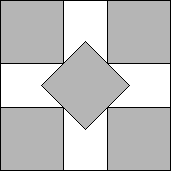
s(5)=2+1/√2
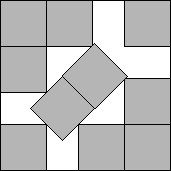
s(10)=3+1/√2
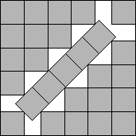
s(27)≤5+1/√2
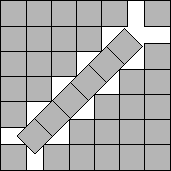
s(38)≤6+1/√2
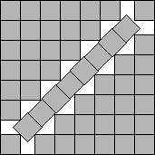
s(52)≤7+1/√2
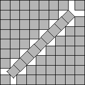
s(67)≤8+1/√2
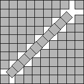
s(84)≤9+1/√2
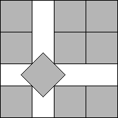
s(10)=3+1/√2
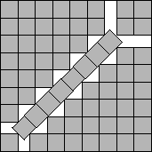
s(67)≤8+1/√2
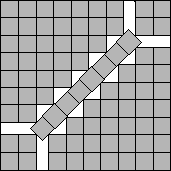
s(84)≤9+1/√2
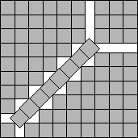
s(84)≤9+1/√2
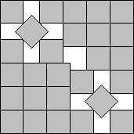
s(27)≤5+1/√2
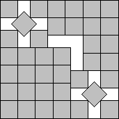
s(38)≤6+1/√2
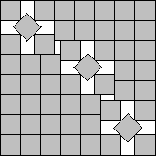
s(52)≤7+1/√2
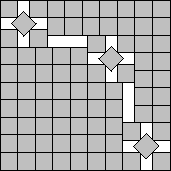
s(84)≤9+1/√2
s(n)+1 squares can be packed in a square of side s(n)+1 by packing n squares inside
a square of side s(n) and putting the other squares in an "L" around it. The first four packings in
Figure 2 are of this form. Packings not containing an "L" of squares we will call
primitive packings. From now on, we will only illustrate primitive packings.
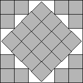
s(28)≤3+2√2
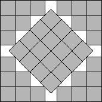
s(40)≤4+2√2

s(65)≤5+5/√2
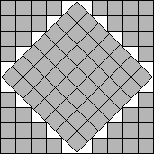
s(89)≤5+7/√2

s(19)≤3+4√2/3
Figure 4.
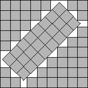
s(66)≤3+4√2
Figure 5.
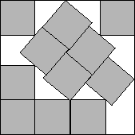
s(11)<3.8771
Figure 6.
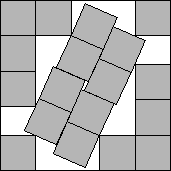
s(18)≤(7+√7)/2
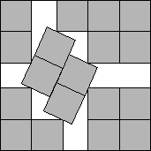
s(18)≤(7+√7)/2
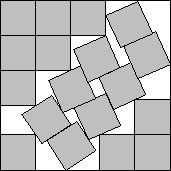
s(18)≤(7+√7)/2
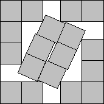
s(18)≤(7+√7)/2
s)>1/6, then W(s)≥
10-100√(s | s-s+1/2 | ). This implies that W(s) is not
O(sα) when α<1/2.
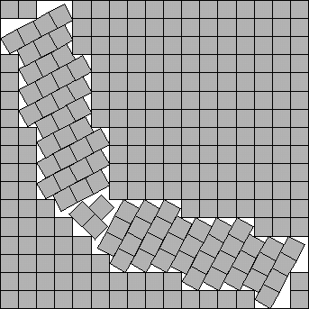
s(272)<17
Figure 8.
3 New Packings
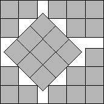
s(26)≤(7+3√2)/2
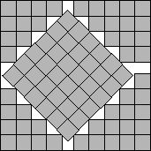
s(85)≤11/2+3√2
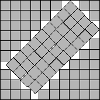
s(87)<9.8520
Figure 10.
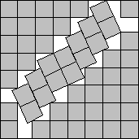
s(53)<7.8231
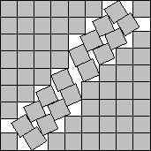
s(68)≤15/2+√7/2
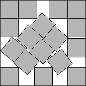
s(17)<4.6756

s(29)<5.9344
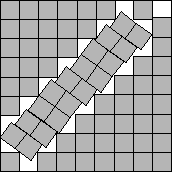
s(70)<8.9121
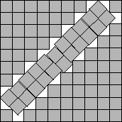
s(88)<9.9018

s(54)<7.8488
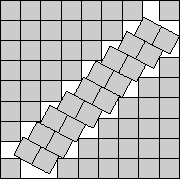
s(69)<8.8287
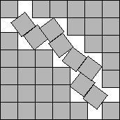
s(39)<6.8189
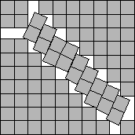
s(86)≤(17+√7)/2

s(37)<6.5987

s(41)<6.9473
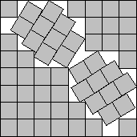
s(55)<7.9871

s(71)<8.9633

s(51)<7.7044
4 Technical Lemmas
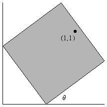
Figure 17.
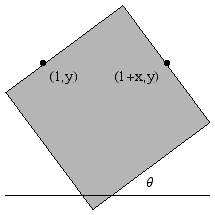
Figure 18.
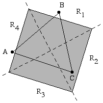
Figure 19.
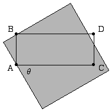
Figure 20.
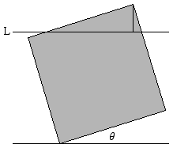
Figure 21.
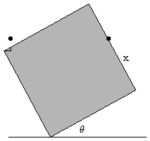
Figure 22.
5 Lower Bounds
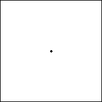
s(2)≥2
Figure 23.
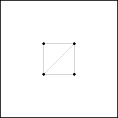
s(5)≥2+1/√2
Figure 24.
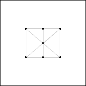
s(8)≥3
Figure 25.
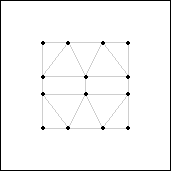
s(15)≥4
Figure 26.
(3.5,2.5), (4,2.5), (1,3.3),
(2,3.3), (3,3.3), (4,3.3), (1,4), (1.7,4), (2.5,4), (3.3,4), (4,4) }
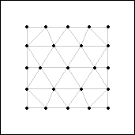
s(24)≥5
Figure 27.
(1,2.55), (2,2.55), (3,2.55), (4,2.55), (5,2.55),
(1,3.375), (1.5,3.375), (2.5,3.375), (3.5,3.375), (4.5,3.375),
(5,3.375), (1,4.2), (2,4.2),
(3,4.2), (4,4.2), (5,4.2), (1,5), (1.6,5), (2.4,5), (3,5), (3.6,5), (4.4,5), (5,5) }
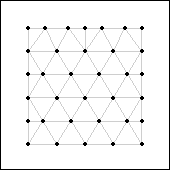
s(35)≥6
Figure 28.
Figure 29.
Figure 31.
n/2+1) ≥ 2√2 + 2(n-2)/√5.
s(17)≥(40√2+19)/17
s(19)≥6√2-4
Appendix
n s(n) Optimal? Figure Author 1 1 2-4 2 5 2+1/√2≈2.7072 Figure 1 Göbel 6-9 3 10 3+1/√2≈3.7072 Figure 1 Göbel 11 ≈3.8771 Figure 6 Trump 12-13 4 14-16 4 17 ≈4.6756 Figure 12 Bidwell 18 7/2+1/2√7≈4.8229 Figure 7 Hämäläinen 19 3+4/3√2≈4.8857 Figure 4 Wainwright 20-22 5 23-25 5 26 7/2+3/2√2≈5.6214 Figure 9 Friedman 27 5+1/√2≈5.7072 Figure 1 Göbel 28 3+2√2≈5.8285 Figure 3 Göbel 29 ≈5.9344
Figure 12 Gensane/Ryckelynck 30-33 6 34-36 6 37 ≈6.5987 Figure 16 Cantrell 38 6+1/√2≈6.7072 Figure 1 Göbel 39 ≈6.8189 Figure 15 Cantrell 40 4+2√2≈6.8285 Figure 3 Göbel 41 ≈6.9473 Figure 16 Cantrell 42-46 7 47-49 7 50 ≈7.5987 51 ≈7.7044 Figure 16 Hajba 52 7+1/√2≈7.7072 Figure 1 Göbel 53 ≈7.8231 Figure 11 Cantrell 54 ≈7.8488 Figure 14 Cantrell 55 ≈7.9871 Figure 16 Cantrell 56-61 8 62-64 8 65 5+5/√2≈8.5356 Figure 3 Göbel 66 3+4√2≈8.6569 Figure 5 Stenlund 67 8+1/√2≈8.7072 Figure 1 Göbel 68 15/2+√7/2≈8.8229 Figure 11 Cantrell 69 ≈8.8287 Figure 14 Morandi 70 ≈8.9121 Figure 13 Cantrell 71 ≈8.9633 Figure 16 Cantrell 72-78 9 79-81 9 82 6+5/√2≈9.5356 83 4+4√2≈9.6569 84 9+1/√2≈9.7072 Figure 1 Göbel 85 11/2+3√2≈9.7427 Figure 9 Friedman 86 17/2+√7/2≈9.8229 Figure 15 Friedman 87 ≈9.8520 Figure 10 Cantrell 88 ≈9.9018 Figure 13 Cantrell 89 5+7/√2≈9.9498 Figure 3 Stenlund 90-97 10 98-100 10
Table 2 contains the best known non-trivial lower bounds on s(n) for n≤85,
along with the Author.
n s(n) Figure Author 2-3 2 Figure 23 Göbel 5 2+1/√2≈2.7071 Figure 24 Göbel 6 3 Kearney/Shiu 7 3 Figure 29 Friedman 8 3 Figure 25 Friedman 10 3+1/√2≈3.7071 Stromquist 11-12 2+4/√5≈3.7888 Stromquist 13 3.8437 Friedman 14 4 Figure 31 Friedman 15 4 Figure 26 Friedman 17-18 (40√2+19)/17≈4.4452 Figure 34 Green 19-20 6√2-4≈4.4852 Figure 34 Friedman 21 4.7438 Friedman 22 2√2+2≈4.8284 Green 23 5 Nagamochi 24 5 Figure 27 Friedman 26-27 2√2+(27+2√10)/13≈5.3918 Green 28-30 2√2+6/√5≈5.5117 Green 31 5.6415 Green 34 6 Nagamochi 35 6 Figure 28 Friedman 37-39 2√2+(113+10√3)/37≈6.3506 Green 40-41 2√2+8/√5≈6.4061 Green 47-48 7 Nagamochi 50-53 2√2+(101+3√14)/25≈7.3174 Green 62-63 8 Nagamochi 65-68 2√2+71/13≈8.2899 Green 79-80 9 Nagamochi 82-85 2√2+(288+12√3)/41≈9.2667 Green
References